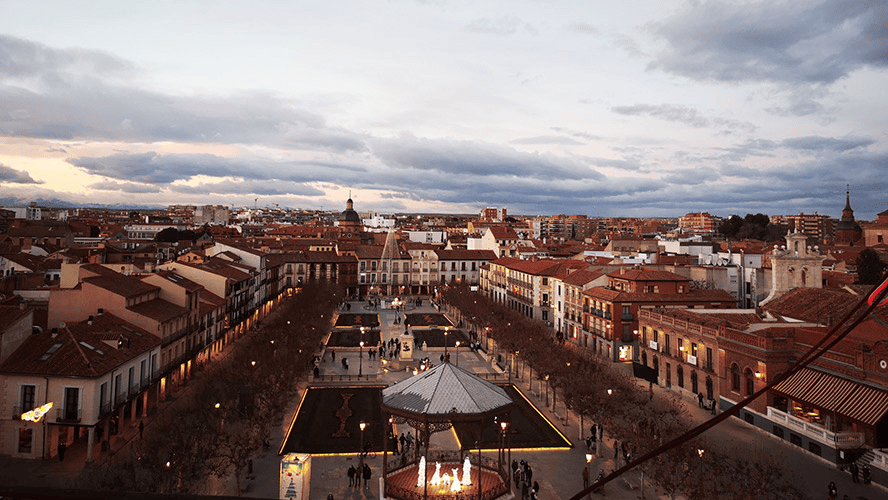
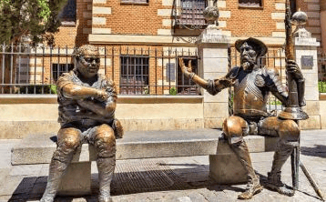

En Alcalá de Henares nació el universal autor de “Don Quijote de la Mancha”, Miguel de Cervantes, y de hecho, es posible visitar su Casa Natal convertida en museo.
Pero una escapada a esta ciudad, a poco más de 30 kilómetros de Madrid, merece la pena por muchos otros motivos: por su impresionante Universidad con siglos de historia, su calle Mayor con sus característicos soportales, su antiquísimo Corral de Comedias… Pero también por sus plazas soleadas, por las abundantes tapas que sirven a la hora de comer y por el ambiente tan especial que se crea durante su mercado medieval o navideño.

Museo Casa Natal de Cervantes
El edificio recrea el ambiente en el que se crio uno de los escritores más importantes de la literatura universal. Está situado en el casco histórico de Alcalá de Henares, declarado Patrimonio Mundial por la UNESCO.
En esta finca nació y vivió su infancia Miguel de Cervantes Saavedra, autor de la inmortal novela El ingenioso hidalgo Don Quijote de La Mancha. El interior de la casa supone un viaje a los siglos XVI y XVII, gracias a una ambientación que recuerda aquella época. La planta baja era donde transcurría la vida cotidiana de la familia y se distribuía en sala de labor, cocina, comedor, el estrado de las damas y el despacho del cirujano, profesión del padre de Cervantes.

Universidad de Alcalá de Henares o Colegio Mayor de San Ildefonso
Fue creada por el cardenal Cisneros con el nombre de Colegio de San Ildefonso. La riqueza del renacimiento español en su etapa más pura se refleja en la portada, siendo con Salamanca la cuna del humanismo.
Se inició su construcción en el siglo XV, terminándose en el XVI bajo la dirección de Pedro Gumiel. Del edificio primitivo solo se conserva el Paraninfo con artesonado y tribuna plateresca. La fachada es lo más importante del edificio. Fue construida por Rodrigo Gil de Hontañón en estilo plateresco, siendo concebida como un retablo dividido por pilastras y columnas. El Paraninfo es una de las mejores muestras del estilo Cisneros, donde se combinan las muestras mudéjar en yesería o madera, y la decoración plateresca.